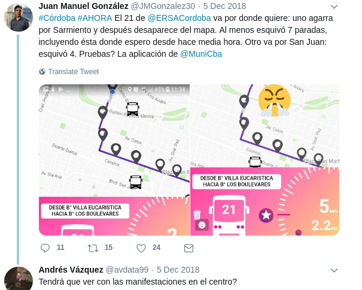

L app unta del iceberg
En octubre de 2018 la Municipalidad de Córdoba lanzó la aplicación móvil llamada Go. Su finalidad es proveer información precisa de cada unidad del transporte público de pasajeros con la finalidad de mejorar la experiencia de los usuarios de este servicio.
Al momento de su salida había aplicaciones similares en Argentina pero ninguna (que yo conozca) que permita seguir al colectivo por su GPS en tiempo real. Incluso cuando el colectivo se desvía por cortes de tránsito los usuarios pueden notarlo y re-ubicarse para alcanzarlo.

Tan difícil de creer que estos datos era reales que este usuario grabó mientras esperaba el colectivo esperando ser defraudado.
Conté hace un tiempo (con motivo del lanzamiento de otra aplicación) la gran cantidad de trabajo que significa llegar a esto y las oportunidades que se abren luego de estas publicaciones.
La aplicación Go representa un esfuerzo particularmente complejo en cuanto a la organización de los datos preexistente:
- Las ubicación y especificaciones (lineas que la usan) de las paradas
- Los recorridos geolocalizados de cada línea.
- La flota activa de colectivos.
- El geoposicionamiento en tiempo real de las unidades
Estos datos se encontraban algunos en poder de la municipalidad en formatos variados, otros como parte del sistema de gestión de flota de las empresas de transporte. Comenzar a trabajarlos y procesarlos deja ver la parte del iceberg que una aplicación simple no permite percibir. Detrás de Go hay miles de horas de trabajo y sobre todo muchos datos.
Esta reorganización de los datos nos permitiría además (todavía no está listo) tener un servicio de datos en formato GTFS.* Este formato es el estándar usado en otras ciudades del mundo para compartir datos de transporte y el que usan las aplicaciones más usadas (Google Maps, Apple, etc). Una ciudad sin GTFS no puede decir que ha terminado de abrir sus datos de transporte.
Todos estos datos en control municipal, organizados y antes de lanzar Go nos permitieron desarrollar tableros de control interno que permitían a personal de transporte ver en tiempo real donde estaban las unidades y cuantas de ellas se encontraban prestando servicio. Esto permite mejorar sensiblemente el control de la calidad del servicio subiendo el nivel de datos en poder del municipio en su dialogo con los prestadores del servicio.
Sin embargo la cantidad de datos recibidos ** nos permitían hacer análisis más detallados y complejos que requerían más y mejor equipo del que teníamos.
Mano en la data
"CAF financiará proyectos que usan la ciencia de datos para el diseño de políticas públicas en la Argentina" Por suerte encontramos que CAF estaba buscando conectar científicos de datos y políticas públicas.
CAF financiaba con hasta US$ 10.000 a 5 equipos que presentaran propuestas. Se presentaron 10 equipos (Ministerios de Nación Argentina y otras ciudades de nuestro país). Luego de mostrar en un workshop junto a científicos que escucharon nuestros problemas (acompañados por un equipo de la Fundación Sadosky) el trabajo que estábamos realizando la Municipalidad de Córdoba fue seleccionada.
Con esta financiación un equipo de UBA/CONICET trabajó junto a nuestro equipo para sacar mejor provecho de toda la nueva información de transporte que estábamos procesando.
Actualmente estamos integrando todo el trabajo conjunto a nuestras herramientas preexistentes y esperamos publicar (y liberar como software libre para otras ciudades) los resultados finales.
Es muy importante destacar que la totalidad de los fondos se invirtieron en tecnología que es propiedad de la Municipalidad y que incrementará las capacidades propias instaladas en los equipos internos.
Conclusiones
La gestión del sistema de transporte de cualquier ciudad mediana o grande sin datos y análisis es seguramente pobre o incompleta. Mirar todo este cúmulo de datos detenidamente deja ver mucho mejor y a un nivel mucho mas detallado que pasa con este servicio que usan cientos de miles de personas cada día.
*Córdoba tuvo el primer GTFS de Argentina que lamentablemente se discontinuó. Impulsado por un activista de la ciudad, Gastón Ávila (acá cuenta un poco del tema).
** Por ejemplo la posición GPS cada ~20 segundos de las 900 unidades de transporte
![Entrevista con Álvaro Encina [s01e20]](https://cadenadedatos.org/audios-y-rss/audios/s01e20-encina.jpg)
![Entrevista con Fabrizio Scrollini [s01e19]](https://cadenadedatos.org/audios-y-rss/audios/s01e19-scrollini.png)